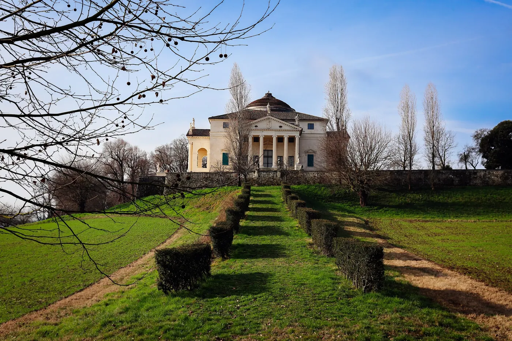
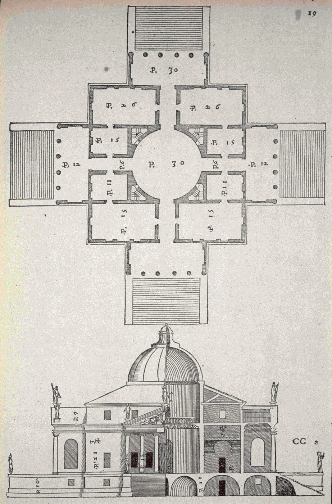
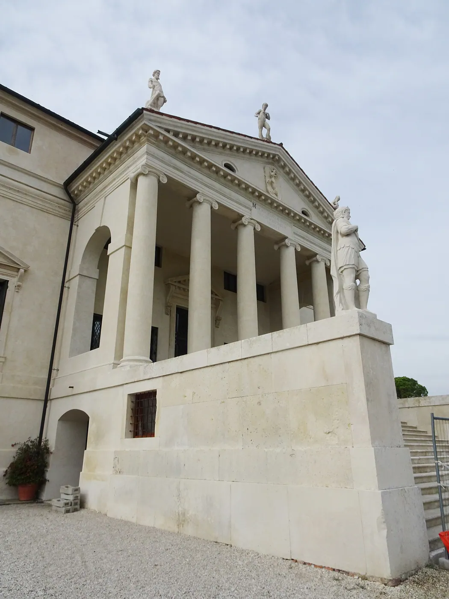
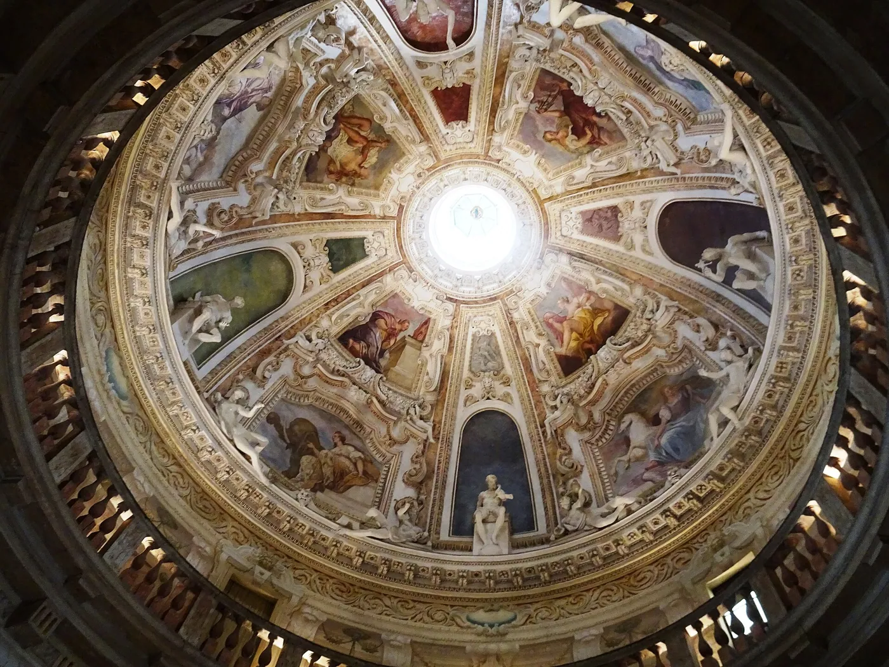
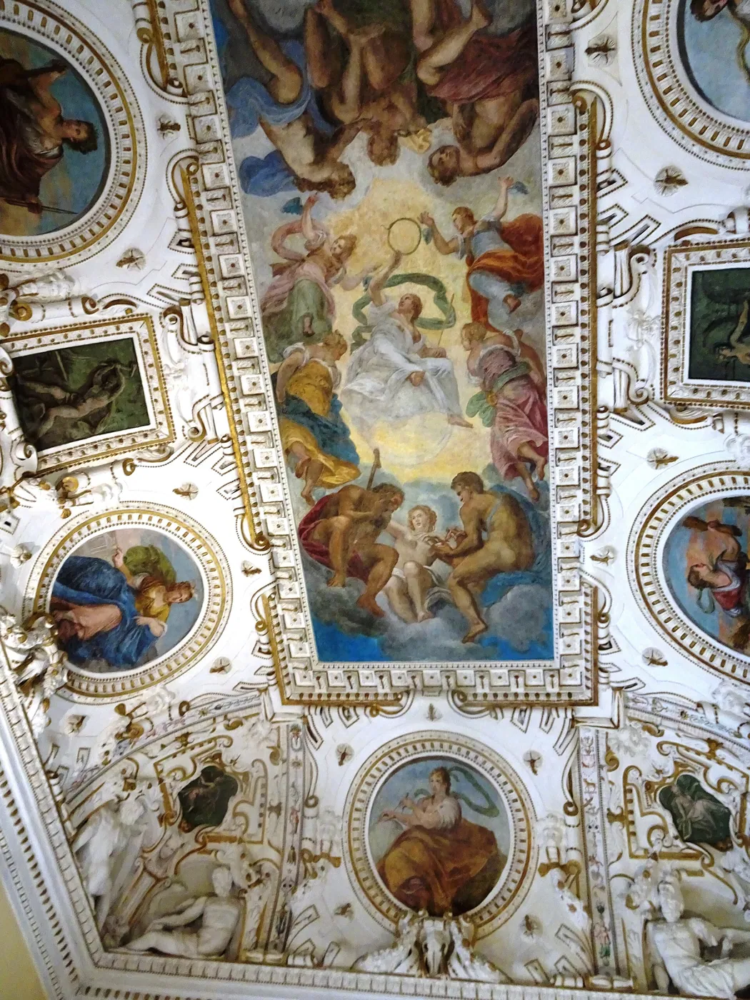
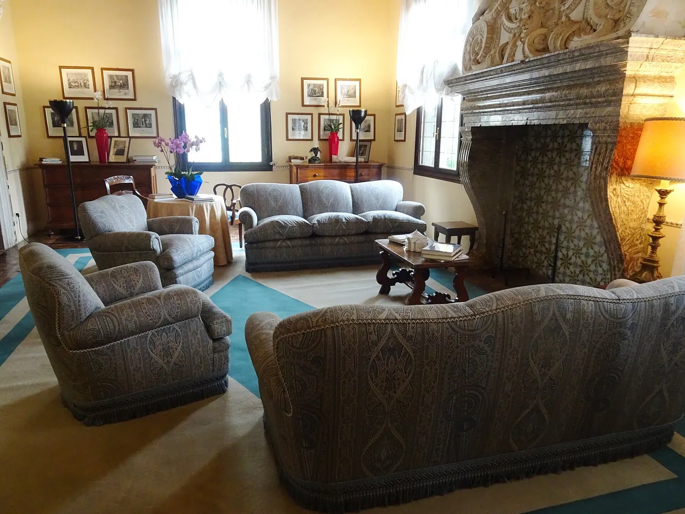

1/8 · Exterior · Villa Almerico Capra (La Rotonda)Photo: Matteo_Pappadopoli · CC BY-SA 4.0 · source
2/8 · Exterior · Vicenza , Veneto, ItalyPhoto: Palickap · CC BY-SA 4.0 · source
3/8 · Exterior · Vicenza , Veneto, ItalyPhoto: Palickap · CC BY-SA 4.0 · source
4/8 · Interior · Vicenza , Veneto, ItalyPhoto: Palickap · CC BY-SA 4.0 · source
5/8 · Interior · Vicenza , Veneto, ItalyPhoto: Palickap · CC BY-SA 4.0 · source
6/8 · Interior · Vicenza , Veneto, ItalyPhoto: Palickap · CC BY-SA 4.0 · source7/8 · Interior · Villa Almerico Capra (La Rotonda) La cupola vista dall'internoPhoto: Matteo_Pappadopoli · CC BY-SA 4.0 · source 8/8 · DrawingPhoto: Palladio · Public domain · source
8/8 · DrawingPhoto: Palladio · Public domain · sourceHouse · Historic precedent
Villa La Rotonda
Andrea Palladio · Vicenza, Italy · 1592
Key featuresA square plan with four porticoes: the villa that later classical houses copied.
- Architect
- Andrea Palladio
- Place
- Vicenza, Italy
- Year
- 1592
- Typology
- House
- Movement
- Historic precedent
- Region
- Europe
See it on the wall


_-.jpg){kind=link}
.jpg){kind=link}
.jpg){kind=link}
.jpg){kind=link}
.jpg){kind=link}
.jpg){kind=link}
_-_interno.jpg){kind=link}